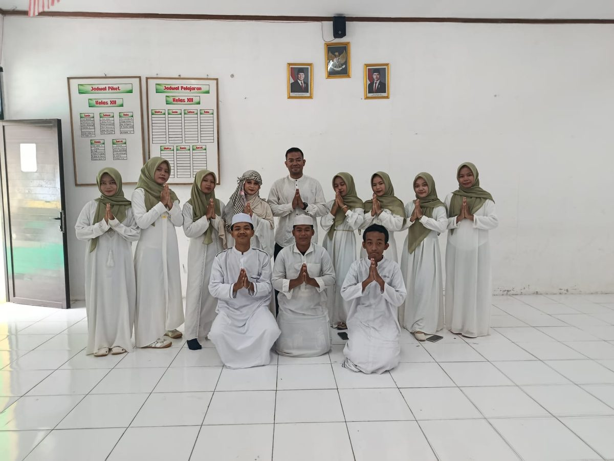

Kegiatan Rohis Perkuat Pembinaan Keislaman dan Karakter Religius Siswa

Rohani Islam (Rohis) MA Al-Riyadhul Jannah mengadakan kegiatan pembinaan keislaman bagi para anggotanya.
Kegiatan meliputi kajian keislaman, pembacaan Al-Qur'an, diskusi, serta praktik ibadah yang dipandu oleh guru pembina.
Melalui kegiatan ini, siswa diajak memperdalam pemahaman agama sekaligus menerapkan nilai-nilai akhlak mulia dalam kehidupan sehari-hari di sekolah maupun di rumah.
Rohis juga menjadi wadah bagi siswa untuk belajar berorganisasi, bekerja sama, dan menjadi teladan bagi teman-temannya.
Sekolah berharap Rohis terus berkembang dan melahirkan generasi yang taat beribadah, berakhlak baik, dan bermanfaat bagi masyarakat.
← Kembali ke Berita